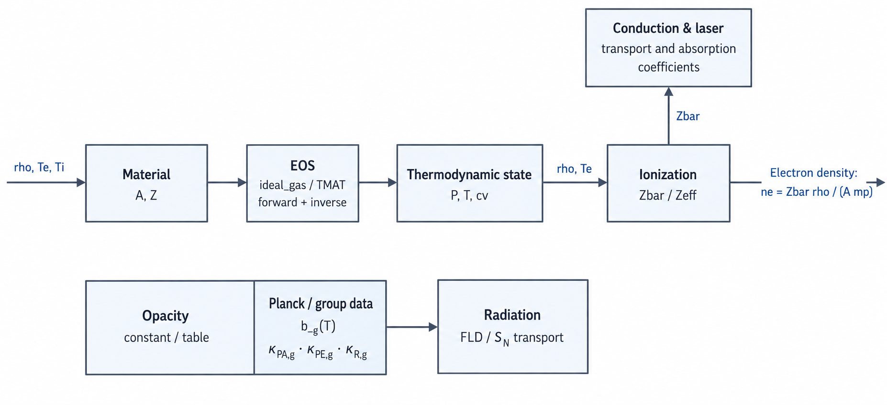

EOS, opacity & ionization reference
TENRYU's material closure connects composition \(A,Z\), the EOS, mean ionization, and opacity to one cell state. It offers an analytic two-temperature ideal gas or tabulated TMAT EOS, fixed or state-dependent \(\bar Z\), and constant or tabulated mass opacity. The resulting electron density feeds conduction and laser physics; group coefficients and Planck weights feed radiation transport.
Physical mechanism
The evolution operators advance conserved quantities; everything else needed by the physics — \(P\), \(T\), \(c_v\), \(\bar Z\), and \(\kappa\) — must be reconstructed from material closures at the cell state. High-energy-density matter can span an enormous range within one shot, from cold solid to multi-keV plasma, while opacity changes by orders of magnitude. The analytic-versus-tabulated choice is therefore a per-material choice between transparency and fidelity.
The analytic baseline is a two-temperature ideal gas with independent electron and ion branches, whereas real target materials use TMAT-H5 tables — TENRYU's tabulated-material format and its HDF5 container, specified in the repository's docs/TMAT_H5_SPEC.md — of \(P\), \(e\), and \(c_v\). The inverse \(T(\rho,e)\) is the workhorse because hydro closes energy, not temperature: every reclosure performs a monotone binary search of the energy row at a fixed density bracket, then interpolates in \(\log T\). The device path is deliberately Newton-free — robust, deterministic, and free of a convergence branch — and clamps to table endpoints while exposing the clamp rather than silently extrapolating.
Ionization is the coupling constant. The mean charge sets \(n_e=\bar Z\rho/(A m_p)\), and \(n_e\) enters Spitzer conduction, inverse-bremsstrahlung collision rates, the electron EOS branch, and radiation–matter coupling. TENRYU can use fixed \(\bar Z=Z\), the Thomas–Fermi More fit, or tabular \(\bar Z(\rho,T_e)\); dynamic models are reevaluated at the conduction and radiation entrances so each operator sees ionization consistent with its starting state. Collision rates weight \(Z^2\), not \(Z\): when charge-state fractions are available, \(r_2=\langle Z^2\rangle/\bar Z^2\) upgrades the Spitzer and SNB charge factors through \(Z_{\rm eff}=\bar Zr_2\).
Transport needs the Rosseland mean, a flux-weighted harmonic mean of \(1/\kappa_\nu\). Radiation flows through all frequency channels simultaneously — in parallel — so, exactly as with parallel resistors, the easiest path dominates: transparent spectral windows control the Rosseland mean. Emission and absorption instead need Planck means, linear emission-weighted means of \(\kappa_\nu\) in which strong lines dominate. The same physics fixes mixed-cell rules: Planck opacities add mass-linearly as absorbers, while Rosseland opacities combine harmonically through transparent paths. Planck weights \(b_g(T)\) close the finite group structure with finite-bound and out-of-range diagnostics; for an LTE (local-thermodynamic-equilibrium) table without an emission block, the documented warning-producing fallback is \(\kappa^{PE}=\kappa^{PA}\).
From material data to transport coefficients
Material.A is the mean mass per ion in amu, while Material.Z is the mean atomic number or representative charge. For one material, \(n_i=\rho/(A m_p)\) and \(n_e=\bar Z n_i\), where \(m_p=1.6726\times10^{-24}\) g is the proton mass: TENRYU deliberately treats the atomic mass unit as \(m_p\), a fixed convention of the frozen constant set whose ≈0.8% offset from the true amu is absorbed into the material's effective \(A\). For a compound, \(A\) is the number-fraction mean ion mass, not the molecular mass: equiatomic CH uses 6.5 and CD uses 7. This contract aligns the EOS and opacity density axes with downstream particle-density calculations.
The EOS closes pressure, temperature, and heat capacity; ionization supplies \(\bar Z\). Their \(n_e\) drives electron conduction and inverse-bremsstrahlung laser absorption. On a separate branch, opacity combines with temperature-dependent Planck weights to produce group coefficients for FLD or \(S_N\) radiation. All branches share the material state but remain independently testable.
- \(A\) — the number-fraction mean ion mass: CH uses 6.5 and CD uses 7. This density-axis contract keeps EOS, opacity, and particle densities consistent.
- \(n_e=\bar Z\rho/(A m_p)\) — the electron density passed from composition and ionization into collisional transport and coupling coefficients.
- \(\kappa\) versus \(\sigma=\rho\kappa\) — mass opacity is stored in cm²/g; transport consumes the distinct length opacity in cm⁻¹.
cv_e_override— a volumetric heat capacity in erg/(cm³·eV). It feeds the same constant to the Fleck factor (the linearization coefficient that couples radiation emission and absorption implicitly — see FLD) as a verification contract, not as a material-fitting knob.- \(r_2=\langle Z^2\rangle/\bar Z^2\) — clamped to 1–10 before forming the collisional \(Z_{\rm eff}=\bar Zr_2\). The clamp is a numerical guard, not physics: \(r_2\ge1\) holds by construction (it is a variance ratio), and the ceiling of 10 bounds the correction against degenerate or corrupt fraction tables.
- \(10^{-20}\) cm²/g — the component floor applied before the Rosseland harmonic mean. It sits many orders below any physical opacity and exists solely to keep the harmonic combination finite when a component is exactly zero.

Ideal-gas and TMAT equations of state
eos.model="ideal_gas" independently closes the electron and ion branches. For the default monatomic gas, \(\gamma=5/3\), \(P_i=\rho k_BT_i/(A m_p)\), and \(P_e=\bar Z\rho k_BT_e/(A m_p)\), with \(k_B\) the eV_to_erg conversion as everywhere in the cgs + eV system. These temperature branches are the primary closure; the pressure–energy form \(P=(\gamma-1)\rho e\) with the configured ideal_gas.gamma is the equivalent statement of the same ideal gas — since \(e_i=k_BT_i/[(\gamma-1)Am_p]\) for the ion branch and \(e_e=\bar Z\,k_BT_e/[(\gamma-1)Am_p]\) for the electron branch, the two forms are consistent by construction — used when closing from evolved energy. When \(\bar Z\) depends on temperature, the electron branch keeps this consistency by including the \(T_e\,d\bar Z/dT_e\) contribution in the electron heat capacity.
cv_e_override supports verification problems, such as Marshak-wave or Su–Olson setups, that prescribe a constant electron volumetric heat capacity. Its unit is erg/(cm³·eV), unlike the mass-specific \(c_v\) in erg/(g·eV) returned by an EOS table. The override supplies the same constant \(C_{v,e}\) to the radiation Fleck factor. It therefore represents a constant-\(C_v\) verification contract, not a general material-fitting parameter.
eos.model="tmat" builds ion, electron, and total \(P(\rho,T)\), \(e(\rho,T)\), and \(c_v(\rho,T)\) tables from TMAT-H5. The native ion-number-density axis is converted with \(\rho=n_i A m_p\). Runtime evaluation is bilinear in \((\log\rho,\log T)\), clamps outside the tabulated domain, and applies a warning-producing safety floor to non-positive \(c_v\).
Hydrodynamic reclosure from evolved energy does not run Newton iterations. At a fixed density bracket, the device path performs a monotone binary search of the energy row, then interpolates between adjacent temperature indices in \(\log T\). The inverse \(T(\rho,e)\) and subsequent forward \(P,e,c_v\) evaluations reuse the same density bracket. A target energy beyond the table range returns the corresponding endpoint temperature.
Mean ionization and collisional effective charge
The default Materials.zbar.model="fixed" uses \(\bar Z=Z\), implying full ionization. State-dependent alternatives are thomas_fermi, based on the More et al. fit, and tabular, which interpolates \(\bar Z(\rho,T_e)\). Dynamic models are reevaluated at the entrances to the conduction and radiation operators. Thus ionization after hydro compression reaches conduction, and the temperature change after conduction reaches radiation closure.
If a TMAT file contains optional per-element charge-state fractions under /ionization, TENRYU can retain a collisional moment that a single \(\bar Z\) loses. It reduces the fractions to \(r_2=\langle Z^2\rangle/\bar Z^2\), clamps that ratio to 1–10, and uses \(\bar Zr_2=Z_{\rm eff}\) for Spitzer conduction and the SNB (nonlocal electron conduction — see Conduction) charge factor. With no fraction table, no correction is applied. This v1 table-moment path is restricted to a single material in 1D spherical geometry (1D_SPH).
The material zbar.model and laser-IB Laser.ib.zeff_model are separate controls. The latter defaults to auto: it resolves to table when TMAT ionization fractions exist and to off otherwise. Fixed \(\bar Z\) and automatic \(Z_{\rm eff}\) therefore govern electron density and multispecies collision weighting, respectively.
Opacity and material mixing
opacity.model="constant" supplies absorption kappa_a and scattering kappa_s in cm²/g and assigns them to every group; note that kappa_s is accepted by the schema for forward compatibility, but v1.0's production solvers set physical scattering to zero and do not consume it (see Numerical foundations). A table model supplies density-, temperature-, and group-dependent Rosseland \(\kappa_R\), Planck absorption \(\kappa^{PA}\), and, when present, Planck emission \(\kappa^{PE}\). Transport converts each mass opacity to \(\sigma=\rho\kappa\). When an LTE table has no independent emission block, the documented, warning-producing fallback is \(\kappa^{PE}=\kappa^{PA}\).
In a mixed cell, Planck absorption is mass-linearly combined: \(\kappa_{P,mix}=\sum_\alpha f_{m,\alpha}\kappa_{P,\alpha}\). Rosseland transport instead uses \(1/\kappa_{R,mix}=\sum_\alpha f_{m,\alpha}/\kappa_{R,\alpha}\). The documented convention names these linear_mass and harmonic_mass_R. A \(10^{-20}\) cm²/g component floor prevents division by zero before the Rosseland harmonic mean.
PlanckTable and group-coverage diagnostics
For group \(g=[E_{g-1},E_g)\), the Planck fraction is the in-group blackbody integral divided by the full spectrum:
$$ b_g(T)=\frac{15}{\pi^4}\int_{E_{g-1}/T}^{E_g/T}\frac{x^3}{e^x-1}\,dx. $$With planck_fraction.method="compute", initialization evaluates this integral on a temperature grid; runtime uses linear interpolation in PlanckTable. Finite photon bounds can make the raw sum smaller than one, so production weights are renormalized to \(\sum_gb_g=1\). Renormalization does not recover missing spectrum: TENRYU also records the tail deficit \(\delta(T)=1-\sum_gb_g^{raw}(T)\), reports its maximum over the table grid, and warns above \(10^{-3}\).
compute_T_range_eV defines the Planck table's temperature axis. If omitted, it is derived from active electron-EOS tables, then opacity tables, then the fallback [0.01, 1000] eV. Runtime temperatures outside this interval clamp to an endpoint; each step records the access count \(N_{OOR}\) and maximum fractional exceedance. This temperature axis is distinct from photon group bounds: one must cover interpolation temperatures, while the other must cover the expected plasma spectrum.
Where the closures are called, step by step
Initialize. Load the material tables, freeze configured callables, and build
PlanckTableon the radiation-group bounds.Reclose after each hydro half-step. Recover \(T\) from the evolved \((\rho,e)\) with the inverse EOS, then evaluate \(P\) and \(c_v\) forward while reusing the same density bracket.
Enter conduction. Refresh dynamic \(\bar Z\), form \(n_e=\bar Z\rho/(A m_p)\), and evaluate the conductivity coefficients from that entrance state.
Enter radiation. Refresh \(\bar Z\) and \(Z_{\rm eff}\), evaluate \(\kappa_R\), \(\kappa^{PA}\), and \(\kappa^{PE}\) at \((\rho,T_e)\), convert each mass opacity to \(\sigma=\rho\kappa\), and evaluate \(b_g(T_e)\).
Mix material contributions. In mixed cells apply
linear_massto Planck absorption and emission andharmonic_mass_Rto Rosseland transport.Expose safeguards. Apply the warning-producing safety floor to non-positive \(c_v\), clamp table-domain accesses to endpoints, and apply the Rosseland opacity floor. These clamps warn; they do not silently rewrite the intended physics.
Key controls
The table lists the material-closure controls used on this page. See the namelist reference for complete validation rules.
| Key | Value/default | Purpose |
|---|---|---|
Material.A, Material.Z | per material | Mean ion mass [amu] and representative nuclear charge. |
eos.model | ideal_gas | tmat | Analytic 2T closure or TMAT-H5 table EOS. |
ideal_gas.gamma | 5/3 | Ideal-gas adiabatic index; \(1<\gamma\le3\). |
ideal_gas.cv_e_override | None | Constant electron volumetric heat capacity for verification. |
opacity.model | constant | table | Group-constant or table coefficients (TMAT-H5, or the .cn4 format of the collisional-radiative code Ionmix, “IONMIX”). |
kappa_a, kappa_s | required / 0.0 | Constant absorption and scattering mass opacities. |
opacity.units | "cm2_per_g" | Fixed mass-opacity unit. |
Materials.opacity_mix_rule | "linear_mass" | Mass-fraction linear mixing for Planck absorption. |
Materials.zbar.model | "fixed" | Selects fixed, thomas_fermi, or tabular \(\bar Z\). |
Laser.ib.zeff_model | "auto" | Uses table \(Z_{\rm eff}\) when TMAT fractions are available. |
Material.is_void | False | Marks a material as void and excludes table loading and coupling. |
Materials.void_config | ρ, \(T_e\), \(T_i\) | Default density and temperatures for void cells. |
Void materials
An is_void=True material skips EOS and opacity table loading and defaults to a low-density ideal gas with kappa_a=kappa_s=0, \(A=1\), and \(Z=0\). It is excluded from the mixed-cell composition averages \(\bar Z_{eff}\) and \(A_{eff}\) (these are mixture averages — distinct from the collisional \(Z_{\rm eff}=\bar Zr_2\) above), from EOS, and from mass-fraction mixing; its volume fraction only derives the cell_is_void mask. A void cell forces \(\bar Z=0\), skips Thomas–Fermi evaluation and radiation/laser/conduction coupling, and takes its initial \(\rho,T_e,T_i\) from void_config.
Verification
- The TMAT lookup twins combine forward \((\log\rho,\log T)\) interpolation against manufactured tables with a GPU inverse smoke on the GXII CD table. At \(\rho=1.05\) g/cm³ and \(e_e=10^6\ldots10^{12}\) erg/g, the inverse requires zero bracket failures and zero fallbacks.
- The Planck sum gate covers 1, 4, 16, and 64 groups over \(T=1\ldots10^5\) eV, checking normalized weights, terminal CDF, and the group-summed \(aT^4\). Runtime diagnostics separately report tail deficit and temperature-range coverage.
- Opacity-parity benchmarks must align physical assumptions. The HELIOS LTE parity A/B uses a TENRYU Kirchhoff branch with
kappa_PE := kappa_PA, separating that matched LTE treatment from the raw CRE (collisional-radiative-equilibrium) non-LTE emission table.
References
- R. M. More, K. H. Warren, D. A. Young, and G. B. Zimmerman, "A New Quotidian Equation of State (QEOS) for Hot Dense Matter," Phys. Fluids 31, 3059–3078 (1988). doi:10.1063/1.866963